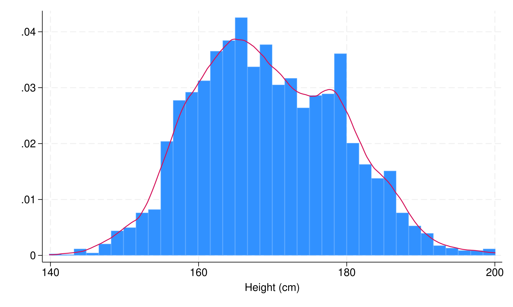
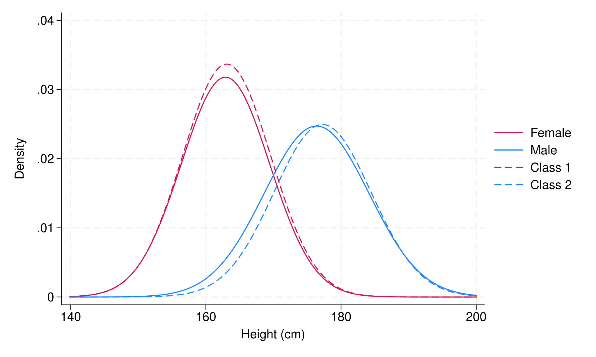

[1] The latent bias in latent class analysis
After you fit a latent class model, linking the classes to outcomes is trickier than it looks. The standard approach biases your estimates toward zero. Here is what goes wrong and how the step3 command in Stata corrects it.
Latent class analysis is a method for discovering hidden subgroups of observations in your data. Latent means not directly observed: the classes are inferred from patterns in measured variables (such as survey responses, test items, behavioural indicators) rather than assigned by the researcher. Feed it enough items and it tells you that your sample breaks into — say — three distinct profiles, each with a characteristic response pattern.
Once you have those classes, the natural next question is: do they differ on some outcome I care about? Or: what predicts membership in each group? The standard approach to answering these questions introduces a systematic bias that shrinks your estimates.
Here is what goes wrong, why it matters, and how to fix it in Stata.
The three-step workflow
In Step 1, you estimate the latent class model using only the observed indicators (no external variables yet). The model returns posterior probabilities for every observation: one probability per class, summing to 1. If your model has two classes, person i might come out 85% likely to belong to Class 1 and 15% likely to belong to Class 2.
In Step 2, you assign each person to their modal class, that is the one with the highest posterior. Person i at 85% / 15% gets hard-assigned to Class 1. An alternative is proportional assignment, where each person contributes fractionally to every class weighted by their posteriors.1
In Step 3, you run a regression, ANOVA, or multinomial logit using these class labels as a variable.
The problem is between Steps 2 and 3, wherein we treat the latent class variable as if it were observed.
The bias: class differences get diluted
When you assign someone to a class, you treat an uncertain membership as though it were known with certainty. People who truly belong to Class 1 get counted in Class 2, and vice versa. The groups look more similar than they actually are, hence the estimated difference between them shrinks.
Simulation studies show naive three-step estimates are typically 20–45% smaller than the truth: largest when classes overlap, smallest when they are more cleanly separated.2
The mechanism is easy to see. Suppose two equal-sized classes have true outcome means of 1 and 0, and 20% of observations land in the wrong class. The "Class 1" bucket now contains 80 genuine members (mean 1) and 20 interlopers from Class 2 (mean 0), giving a bucket average of 0.80. By symmetry the "Class 2" bucket averages 0.20, and the naive estimate of the group difference is 0.60 rather than the true 1.00.
More generally, with a misclassification rate of ε (say, 20%), the naive estimator recovers only (1 − 2ε) of the true effect. At 10% error you keep 80% of the signal; at 30% error you keep only 40%. Models with moderate class overlap routinely sit between ε = 0.15 and ε = 0.30, which is well within the range where the bias is practically meaningful.
A glass of intuition. Suppose we want to measure how much more alcohol there is in red wine than in water. If we could sort the glasses perfectly, the comparison is stark: a deep-red glass of wine beside a clear glass of water. But modal assignment never hands us the true glasses: it hands us two buckets, each contaminated by the misclassified members of the other. The wine bucket gets a splash of water; the water bucket gets a splash of wine. Both come out more or less pink. Of course the gap between two pinks is narrower than the gap between red and clear, and the more the classes overlap (the lower the entropy), the more alike those two pinks become, until the measured difference all but disappears.
With 20% misclassification each bucket trades a fifth of its contents with the other: the wine bucket keeps only 80% of its colour, the water bucket picks up 20%, and a true gap of 12 is measured as roughly 7. Push the classes closer together (right) and the two buckets converge on the same pink: the estimated difference collapses toward zero even though nothing about the real wine and water has changed.
The classification error matrix
Think of D as a receipt that summarises how much Step 2 distorted things. The entry in row s, column t is the probability of being assigned to class t when your true class is s. Diagonal entries capture correct classification; off-diagonal entries capture misclassification.
Formally, D is an S × S matrix — for two classes, a 2 × 2 table. When classes are well separated, the diagonals approach 1 and the off-diagonals approach 0. When classes overlap, the off-diagonals grow, and so does the bias. The key point: you do not need to guess D. It can be computed directly from the posterior probabilities saved in Step 1, by averaging across observations within each true-class group.
The fix: two bias-corrected methods
Bolck–Croon–Hagenaars (BCH; Bolck et al., 2004). BCH takes the inverse of D and uses it as a set of correction weights. The dataset is expanded into one row per class per observation, each row weighted by an entry of D⁻¹. A standard weighted regression on this expanded dataset recovers unbiased estimates without ever touching the mixture model again, meaning that class definitions from Step 1 stay frozen.
Maximum Likelihood (ML; Vermunt, 2010). ML re-estimates the mixture model in Step 3, but holds the entries of D fixed as constraints. This lets the model account for classification error while estimating the relationship with the external variable, and it reports class-specific variances that BCH does not provide. The trade-off: it assumes normality within classes, which BCH does not require.2
Use BCH when normality within classes is uncertain, or when you want class definitions to stay fixed between steps. Use ML for categorical outcomes or when classes are well separated and distributional assumptions are plausible.
Using step3 in Stata
Computing and manipulating the D matrix is not exactly a piece of cake. Fortunately, the step3 module implements both BCH and ML methods in Stata. Let's see how it works with a simple example.
Let's install the command and dataset first:
. net install st0801We can now sysuse height, which contains fictional data on 4,071 American high school seniors. Our variables are: person ID (pid), student height (cm), sex (1 = female, 2 = male).
We also have a variable y, generated to follow a normal distribution with µ = 0, σ = 1 for male students (48% of the sample), and µ = 0.5, σ = 1 for female students (52% of the sample). Assume that the nature of y is unknown, and our goal is to test whether female students have higher values of y than male students. Further, suppose that our funny colleague dropped the sex variable from our dataset while you were in the toilet, making it our latent categorical variable in this example.3
Fortunately for us, we still observe student height, which can serve as a useful proxy for sex. Heights may be represented as a mixture of two Gaussian components, corresponding to female and male students, with males expected to be, on average, about 5%–10% taller.

. sysuse height
. twoway hist height || kdensity heightMore formally, we aim to fit the following model:
where f(height) is the overall probability density of height, π1 and π2 are the mixing proportions (π1 + π2 = 1), and N(µj, σj2) are Gaussian distributions with mean µj and variance σj2, representing the two subpopulations of female and male students. In Stata, we can fit this model with fmm or gsem, and predict the posterior class membership probabilities for each observation as follows:
. fmm 2: regress height
. predict cpost*, classposteriorpr
Finite mixture model Number of obs = 4,071
Log likelihood = -15016.15
------------------------------------------------------------------------------
| Coefficient Std. err. z P>|z| [95% conf. interval]
-------------+----------------------------------------------------------------
1.Class | (base outcome)
-------------+----------------------------------------------------------------
2.Class |
_cons | -.2149548 .2166024 -0.99 0.321 -.6394878 .2095781
------------------------------------------------------------------------------
Class: 1
Response: height
Model: regress
-------------------------------------------------------------------------------
| Coefficient Std. err. z P>|z| [95% conf. interval]
--------------+----------------------------------------------------------------
height |
_cons | 163.0747 .6220492 262.16 0.000 161.8555 164.2939
--------------+----------------------------------------------------------------
var(e.height)| 42.44258 3.455455 36.18273 49.78542
-------------------------------------------------------------------------------
Class: 2
Response: height
Model: regress
-------------------------------------------------------------------------------
| Coefficient Std. err. z P>|z| [95% conf. interval]
--------------+----------------------------------------------------------------
height |
_cons | 177.2601 .9649576 183.70 0.000 175.3688 179.1514
--------------+----------------------------------------------------------------
var(e.height)| 51.78815 5.937079 41.36635 64.8356
-------------------------------------------------------------------------------
The first component has an estimated mean height of µ̂1 = 163.07 cm (about 5’4" for the metrically resistant) with variance σ̂12 = 42.44, while the second has µ̂2 = 177.26 cm (about 5’10") with variance σ̂22 = 51.79. Since the second component corresponds to taller students, we label it "Male" and the first "Female". To plot the fitted model, we also need the mixing-proportion estimates π̂1 and π̂2. We will overlay the true sex-specific height distributions to assess how well the model has recovered them.
. estat lcprob, nose
Latent class marginal probabilities Number of obs = 4,071
--------------------------------------------------------------
| Margin
-------------+------------------------------------------------
Class |
1 | .5535327
2 | .4464673
--------------------------------------------------------------

. twoway (function .52*normalden(x,162.9026,6.526993), range(height)) (function .48*normalden(x,176.3803,7.747659), range(height)) (function .55*normalden(x, 163.0747, sqrt(42.44258)), range(height)) (function .45*normalden(x,177.2601,sqrt(51.78815)), range(height)), legend(label(1 "Female") label(2 "Male") label(3 "Class 1") label(4 "Class 2")) ytitle("Density") xtitle("Height (cm)")As shown in the figure above, the two components align fairly well, though not perfectly, with the true distributions. Our model estimates 55% female and 45% male students in the population. We can infer that the imperfect classification arising from using height alone is due to relatively tall female students, and relatively short male students, for whom the classification probabilities are not very separated (again, low entropy).
Nevertheless, a common approach at this stage is to assign each student to the class with the highest posterior membership probability and then compare means of y across classes using ANOVA, a t-test, or similar methods. If the mixture model had perfectly recovered the sex variable, the differences in y obtained via modal assignment would match those from the true sex variable. However, this is rarely the case. As a result, we expect the relationship between class membership and y to be somewhat diluted (recall the wine example above). To assess this, we estimate a regression model:
. generate Class = 1
. replace Class = 2 if cpost2>cpost1
. regress y i.Class
Source | SS df MS Number of obs = 4,071
-------------+---------------------------------- F(1, 4069) = 109.50
Model | 112.081626 1 112.081626 Prob > F = 0.0000
Residual | 4164.85525 4,069 1.02355745 R-squared = 0.0262
-------------+---------------------------------- Adj R-squared = 0.0260
Total | 4276.93687 4,070 1.05084444 Root MSE = 1.0117
------------------------------------------------------------------------------
y | Coefficient Std. err. t P>|t| [95% conf. interval]
-------------+----------------------------------------------------------------
2.Class | -.335732 .0320835 -10.46 0.000 -.3986332 -.2728308
_cons | .3984043 .0208967 19.07 0.000 .3574354 .4393732
------------------------------------------------------------------------------
The estimated difference between the two components — the coefficient of 2.Class — is ≈ −0.336, about 33% smaller than the true difference of −0.5. Exactly the kind of dilution we expected. To correct for it, we use step3 in BCH mode with the outcome option, which tells the command to treat y as a distal outcome of the latent class. We also supply the prefix of our posterior probabilities (cpost) and a variable name for the modal assignment (W).
. step3 y, pr(cpost) lclass(W) outcome bch
STEP3: Distal outcome analysis
BCH Mean estimation Number of obs = 4,071
--------------------------------------------------------------
| Coefficient Std. err. [95% conf. interval]
-------------+------------------------------------------------
y |
W |
1 | .4678218 .026197 .4164765 .519167
2 | -.0066626 .028869 -.0632448 .0499196
--------------------------------------------------------------
Note: Linearized std. err.
By default, step3 for continuous distal outcomes reports class-specific means of the outcome. Postestimation commands such as pwcompare are also supported:
. pwcompare W
Pairwise comparisons of marginal linear predictions
Margins: asbalanced
--------------------------------------------------------------
| Unadjusted
| Contrast Std. err. [95% conf. interval]
-------------+------------------------------------------------
y |
W |
2 vs 1 | -.4744844 .0450046 -.5626919 -.3862769
--------------------------------------------------------------
The BCH method indeed provided less biased estimates. Next, we try the ML method by removing the option bch. Recall that the ML method uses the entries of the matrix D to re-estimate the mixture model while incorporating the external variable(s).
Consequently, the ML approach may alter the composition of the components in this third step, potentially changing the meaning of the latent classes themselves. To monitor such changes, we can include the option detail, which provides statistics on the switching of observations between classes during the procedure.
If more than 20% of observations switch classes, step3 will automatically display these statistics with a warning message.
. step3 y, pr(cpost) lclass(W) outcome detail
Performing ML estimation...
STEP3: Distal outcome analysis
ML Mean estimation Number of obs = 4,071
--------------------------------------------------------------
| Coefficient Std. err. [95% conf. interval]
-------------+------------------------------------------------
y |
W |
1 | .4674262 .026677 .4151401 .5197122
2 | -.0061706 .0293066 -.0636105 .0512693
-------------+------------------------------------------------
sigma2 |
W#c.y |
1 | 1.045716 .0405707 .9661987 1.125233
2 | .9324711 .0414606 .8512097 1.013732
--------------------------------------------------------------
Note: Robust std. err.
Unequal variance across classes assumed.
Class composition (%) before and after Step 3
--------------------------------------------------
Class | Step 1 Step 3 | Change
-------------+------------------------+-----------
1 | 55.35 55.35 | -0.00
2 | 44.65 44.65 | 0.00
--------------------------------------------------
Observations in Step 1 class moved to a different class in Step 3
+------------------------+
| n % |
|------------------------|
| 1 0 |
+------------------------+
Note: results might be inconsistent for % > 20
The difference between the two components on y, estimated using the ML method, is quite similar to that obtained with the BCH method, both being only about 5% smaller than the true difference. From the detail output, we also see that just 1 out of 4,071 observations switched class during the ML procedure. In addition, the ML method reports variance estimates (sigma2) for each distal outcome within each class, which by default are allowed to differ across classes, though this can be constrained with the eqvar option.
Choosing between methods
| Situation | Method |
|---|---|
| Continuous distal outcome, normality uncertain | BCH |
| Continuous distal outcome, classes well separated | ML |
| Categorical outcome or covariate | ML |
| Low entropy, need stable class definitions | BCH |
| Naive modal or proportional assignment | Avoid |
- This is biased as well [link].↩
- Entropy is a summary of classification quality. High entropy means most posterior probabilities cluster near 0 or 1; low entropy means they spread across classes. The 20–45% bias range assumes moderate entropy. When entropy approaches 1 the bias is negligible. ↩
- Never leave your unlocked laptop unattended. Or do, and then write a methods paper about it. ↩